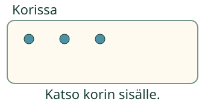
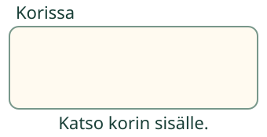
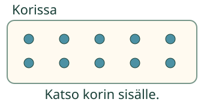

Aava siirtää korin merkit sivuun. Montako koriin jää?
Aava siirtää korin merkit sivuun. Montako koriin jää?
Ei yhtään on nolla
Tiedän, että nolla tarkoittaa: ei yhtään. Katso korin sisälle.

Korissa on kolme merkkiä. Kun kaikki siirretään sivuun, kori jää tyhjäksi.

Yhtään ei ole. Se on nolla. Nolla kirjoitetaan 0. Vaikka määrä on nolla, voimme kirjoittaa sen numerona.
Ennusta: korissa on yksi merkki. Kun sekin lähtee, jääkö vielä yksi?
Katso ajatus
Ei. Viimeisen merkin jälkeen kori on tyhjä. Siinä on 0 merkkiä.
Ilman moduulia: ota kori ja muutama merkki. Siirrä kaikki sivuun. Katso koria ja kirjoita sen tämänhetkinen määrä.
Tyhjä heti alussa
Siemenrasia voi olla valmiiksi tyhjä. Siinäkin on 0 siementä. Nolla ei edellytä, että jotain ensin otetaan pois.
Nolla ei ole kymmenen

Tässä on 10 merkkiä. Numeromerkinnässä 10 on myös nolla, mutta määrä on kymmenen. Tyhjässä korissa määrä on 0.
Apua
Katso, onko rajatun korin sisällä yhtään merkkiä. Nimeä ei tarvitse sanoa ääneen. Jos vastausruutu on tyhjä, määrä on vielä kirjoittamatta. Kirjoita 0, kun yhtään ei ole.
Mallin siirrot ovat erillinen apu. Saat vastata suoraan, kun tiedät.
Tutki lisää ilman ruutua
Aseta vierekkäin tyhjä rasia ja rasia, jossa on yksi merkki. Kumpaan kuuluu lappu 0? Vaihda rasioiden paikkoja. Määrät eivät muutu.
Opettajalle: tavoite ja rajat
Vuosiluokat 1–2, concept/atomic, pedagogically_derived. Vaadittu esitieto on M-NUM-03. Nollan merkitys, sana ja numeromerkintä liitetään näkyvään tyhjään alueeseen. Esineiden nimeämistä, puhetta, kaikkien mallivaiheiden katselua tai jokaisen merkin napauttamista ei vaadita. Kymmenen kuvan merkitys selitetään tässä; paikka-arvosta ei tehdä uutta porttia.
Mallissa alkuperäiset merkit siirtyvät sivuun samankokoisina. Matkan aikana teksti kertoo siirron olevan kesken. Määrä nimetään valmiissa vaiheessa. Kuvitteellinen siirto kestää noin 0,9 sekuntia merkkiä kohden; se ei ole fyysisen työsuorituksen mittaus. Harjoituksen kori on erillinen mallista. Tyhjennys tai palautus muuttaa harjoituksen tilannetta ja poistaa vanhan tarkistustuloksen. Mallin toisto ei muuta vastausta.
Kirjoituskenttä tukee kokonaisia lukuja 0–10. Tyhjä tai virheellinen merkintä ei muutu nollaksi. Tuettu ruututehtävä ei osoita fyysistä käsittelyä, suullista laskemista, yleistä vähennyslaskutaitoa, riippumatonta tai pysyvää hallintaa. Ei henkilöhistoriaa, formaalia hallintamerkintää tai vaikuttavuusväitettä.
Lopuksi: millä numerolla kirjoitat, ettei korissa ole yhtään?